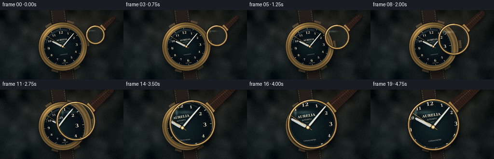
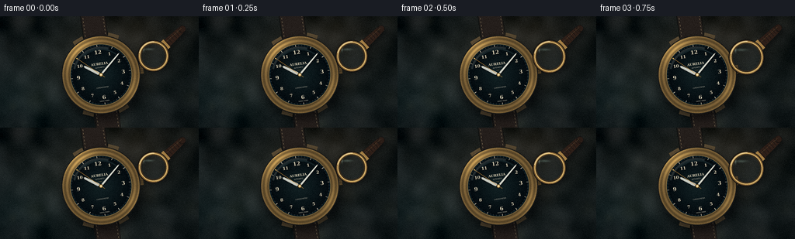

CODING AGENTS AS PIXEL WORLD MODELS
traex/DeepSeek-V4.1-Flash · phygen_067
点击播放 · 原生 RGB 像素
逐轮保存的候选
回放视频、检查图与代码变化。
每份候选均可单独播放。实际图片检查记录在下方工具轨迹中。
候选 01播放与检查图
点击播放 · 原生 RGB 像素

展开代码变化
--- 上一保存版本
+++ 本次保存版本
@@ -0,0 +1,571 @@
+"""Procedural RGB video: a magnifying glass approaching a mechanical wristwatch."""
+
+from __future__ import annotations
+
+import math
+from pathlib import Path
+
+import cv2
+import numpy as np
+from PIL import Image, ImageDraw, ImageFilter, ImageFont
+from scipy.ndimage import gaussian_filter
+
+from artifact_io import save
+
+
+CASE_DIR = Path(__file__).resolve().parent
+W, H = 1024, 576
+OUT_W, OUT_H = 256, 144
+FRAMES = 20
+
+CENTER = (520.0, 302.0)
+DIAL_R = 157.0
+CASE_R = 198.0
+WATCH_ANGLE = math.radians(-8.0)
+
+FONT_SERIF = "/usr/share/fonts/truetype/dejavu/DejaVuSerif.ttf"
+FONT_SERIF_BOLD = "/usr/share/fonts/truetype/dejavu/DejaVuSerif-Bold.ttf"
+FONT_SANS = "/usr/share/fonts/truetype/dejavu/DejaVuSans.ttf"
+FONT_SANS_BOLD = "/usr/share/fonts/truetype/dejavu/DejaVuSans-Bold.ttf"
+
+
+def smoothstep(x: float) -> float:
+ x = min(1.0, max(0.0, x))
+ return x * x * (3.0 - 2.0 * x)
+
+
+def local_to_screen(u: float, v: float) -> tuple[float, float]:
+ c, s = math.cos(WATCH_ANGLE), math.sin(WATCH_ANGLE)
+ return CENTER[0] + c * u - s * v, CENTER[1] + s * u + c * v
+
+
+def transformed_polygon(points: list[tuple[float, float]]) -> list[tuple[float, float]]:
+ return [local_to_screen(u, v) for u, v in points]
+
+
+def radial_patch(center, radius, color_function, softness=1.0):
+ """Return a small antialiased RGBA radial object and its paste position."""
+ cx, cy = center
+ pad = int(math.ceil(radius + 3))
+ x0, y0 = int(cx) - pad, int(cy) - pad
+ x1, y1 = int(cx) + pad + 1, int(cy) + pad + 1
+ yy, xx = np.mgrid[y0:y1, x0:x1]
+ dx, dy = xx - cx, yy - cy
+ rr = np.hypot(dx, dy)
+ angle = np.arctan2(dy, dx)
+ rgb = color_function(rr, angle, dx, dy)
+ alpha = np.clip(radius + softness - rr, 0.0, 1.0)
+ rgba = np.empty((*rr.shape, 4), dtype=np.uint8)
+ rgba[..., :3] = np.clip(rgb, 0, 255).astype(np.uint8)
+ rgba[..., 3] = (alpha * 255).astype(np.uint8)
+ return Image.fromarray(rgba, "RGBA"), (x0, y0)
+
+
+def draw_rotated_text(base, text, xy, font, fill, angle=WATCH_ANGLE):
+ """Draw centered text on an RGBA image, rotating it around its center."""
+ box = font.getbbox(text)
+ tw, th = box[2] - box[0], box[3] - box[1]
+ pad = 8
+ layer = Image.new("RGBA", (tw + pad * 2, th + pad * 2), (0, 0, 0, 0))
+ d = ImageDraw.Draw(layer)
+ d.text((pad - box[0], pad - box[1]), text, font=font, fill=fill)
+ layer = layer.rotate(-math.degrees(angle), resample=Image.Resampling.BICUBIC, expand=True)
+ px = int(round(xy[0] - layer.width / 2))
+ py = int(round(xy[1] - layer.height / 2))
+ base.alpha_composite(layer, (px, py))
+
+
+def make_background(rng: np.random.Generator) -> Image.Image:
+ yy, xx = np.mgrid[0:H, 0:W].astype(np.float32)
+ nx, ny = xx / W, yy / H
+
+ base = np.zeros((H, W, 3), dtype=np.float32)
+ base[:] = (18.0, 25.0, 25.0)
+
+ # Soft, warm studio light centered behind the watch.
+ key = np.exp(-(((nx - 0.44) / 0.50) ** 2 + ((ny - 0.45) / 0.55) ** 2) * 2.2)
+ warm = np.exp(-(((nx - 0.68) / 0.40) ** 2 + ((ny - 0.15) / 0.45) ** 2) * 2.0)
+ cool = np.exp(-(((nx - 0.08) / 0.38) ** 2 + ((ny - 0.80) / 0.48) ** 2) * 2.2)
+ base += key[..., None] * np.array((23.0, 20.0, 16.0), dtype=np.float32)
+ base += warm[..., None] * np.array((17.0, 9.0, 3.0), dtype=np.float32)
+ base += cool[..., None] * np.array((1.0, 7.0, 8.0), dtype=np.float32)
+
+ # Fine woven textile and slower leather/fabric undulations.
+ weave = (
+ np.sin(xx * 2.0 * math.pi / 8.2) * np.sin(yy * 2.0 * math.pi / 9.4)
+ + 0.45 * np.sin((xx + yy) * 2.0 * math.pi / 5.8)
+ )
+ grain = gaussian_filter(rng.normal(0.0, 1.0, (H, W)).astype(np.float32), 1.1)
+ broad = gaussian_filter(rng.normal(0.0, 1.0, (H, W)).astype(np.float32), 27.0)
+ broad /= max(float(np.std(broad)), 1e-6)
+ base += weave[..., None] * np.array((2.1, 2.5, 2.2), dtype=np.float32)
+ base += grain[..., None] * 3.2
+ base += broad[..., None] * 6.0
+
+ # Gentle bokeh flecks keep the fabric from looking like a flat texture.
+ for _ in range(18):
+ bx, by = rng.uniform(0, W), rng.uniform(0, H)
+ radius = rng.uniform(12, 42)
+ strength = rng.uniform(4, 12)
+ glow = np.exp(-(((xx - bx) ** 2 + (yy - by) ** 2) / (2 * radius * radius)))
+ tint = np.array((1.0, rng.uniform(0.7, 0.95), rng.uniform(0.45, 0.75)))
+ base += glow[..., None] * tint * strength
+
+ # Vignette and a restrained filmic lift.
+ r = np.hypot((nx - 0.5) * 1.12, (ny - 0.5) * 1.35)
+ vignette = np.clip(1.05 - 0.40 * r**1.7, 0.46, 1.05)
+ base *= vignette[..., None]
+ base = 255.0 * (1.0 - np.exp(-np.maximum(base, 0.0) / 255.0))
+ return Image.fromarray(np.clip(base, 0, 255).astype(np.uint8), "RGB").convert("RGBA")
+
+
+def draw_strap(scene: Image.Image, rng: np.random.Generator) -> None:
+ strap = Image.new("RGBA", (W, H), (0, 0, 0, 0))
+ d = ImageDraw.Draw(strap)
+
+ # Leather strap sections, tapering slightly away from the case.
+ for y0, y1, near_w, far_w in [(-520, -143, 68, 61), (143, 520, 68, 58)]:
+ poly = transformed_polygon(
+ [(-near_w, y0), (near_w, y0), (far_w, y1), (-far_w, y1)]
+ )
+ d.polygon(poly, fill=(38, 31, 27, 255))
+
+ # Grain is clipped to the strap silhouette.
+ strap_mask = strap.getchannel("A")
+ grain = rng.normal(0, 1, (H, W)).astype(np.float32)
+ grain = gaussian_filter(grain, 1.3)
+ grain = np.clip(128 + grain * 28, 0, 255).astype(np.uint8)
+ tex = Image.new("RGBA", (W, H), (0, 0, 0, 0))
+ tex.putalpha(Image.fromarray(grain))
+ tint = Image.new("RGBA", (W, H), (84, 61, 45, 0))
+ tint.putalpha(strap_mask.point(lambda p: int(p * 0.16)))
+ strap = Image.alpha_composite(strap, Image.composite(tint, Image.new("RGBA", (W, H)), tex.point(lambda p: 80 if p > 128 else 0)))
+
+ # Raised edges and hand stitching.
+ d = ImageDraw.Draw(strap)
+ for side in (-1, 1):
+ edge = [local_to_screen(side * 62, -500), local_to_screen(side * 62, -155)]
+ d.line(edge, fill=(12, 11, 10, 190), width=5)
+ edge2 = [local_to_screen(side * 59, -500), local_to_screen(side * 59, -155)]
+ d.line(edge2, fill=(104, 74, 53, 75), width=2)
+ for y in np.arange(-465, -158, 18.0):
+ a = local_to_screen(side * 52, y)
+ b = local_to_screen(side * 52, y + 7.5)
+ d.line([a, b], fill=(203, 174, 126, 180), width=2)
+
+ edge = [local_to_screen(side * 62, 155), local_to_screen(side * 62, 500)]
+ d.line(edge, fill=(12, 11, 10, 190), width=5)
+ edge2 = [local_to_screen(side * 59, 155), local_to_screen(side * 59, 500)]
+ d.line(edge2, fill=(104, 74, 53, 75), width=2)
+ for y in np.arange(162, 465, 18.0):
+ a = local_to_screen(side * 52, y)
+ b = local_to_screen(side * 52, y + 7.5)
+ d.line([a, b], fill=(203, 174, 126, 180), width=2)
+
+ # Lugs and crown sit below the polished case.
+ d = ImageDraw.Draw(strap)
+ lug_color = (91, 75, 51, 255)
+ lug_highlight = (154, 126, 78, 190)
+ lugs = [
+ [(-105, -145), (-48, -145), (-68, -211), (-122, -188)],
+ [(48, -145), (105, -145), (122, -188), (68, -211)],
+ [(-105, 145), (-48, 145), (-68, 211), (-122, 188)],
+ [(48, 145), (105, 145), (122, 188), (68, 211)],
+ ]
+ for poly in lugs:
+ pp = transformed_polygon(poly)
+ d.polygon(pp, fill=lug_color, outline=(31, 28, 22, 255))
+ d.line([pp[0], pp[1]], fill=lug_highlight, width=2)
+
+ crown = transformed_polygon([(194, -25), (220, -25), (220, 25), (194, 25)])
+ d.polygon(crown, fill=(132, 104, 62, 255), outline=(41, 31, 21, 255))
+ for v in (-18, -8, 2, 12):
+ p1 = local_to_screen(197, v)
+ p2 = local_to_screen(218, v)
+ d.line([p1, p2], fill=(44, 34, 23, 180), width=2)
+ p1 = local_to_screen(198, -19)
+ p2 = local_to_screen(198, 19)
+ d.line([p1, p2], fill=(229, 192, 116, 150), width=2)
+
+ scene.alpha_composite(strap)
+
+
+def draw_watch(scene: Image.Image) -> None:
+ # Watch shadow.
+ shadow = Image.new("RGBA", (W, H), (0, 0, 0, 0))
+ sd = ImageDraw.Draw(shadow)
+ sx, sy = CENTER[0] + 17, CENTER[1] + 25
+ sd.ellipse((sx - 216, sy - 209, sx + 216, sy + 209), fill=(0, 0, 0, 135))
+ shadow = shadow.filter(ImageFilter.GaussianBlur(23))
+ scene.alpha_composite(shadow)
+
+ # Case flank and polished bezel.
+ def metal_color(rr, ang, dx, dy):
+ t = np.clip((rr - DIAL_R + 1.0) / (CASE_R - DIAL_R + 4.0), 0, 1)
+ base = np.empty((*rr.shape, 3), dtype=np.float32)
+ edge = np.minimum(np.clip(t / 0.10, 0, 1), np.clip((1 - t) / 0.08, 0, 1))
+ band = 0.78 + 0.18 * np.cos((t - 0.42) * math.pi * 4.0)
+ key = np.exp(-((np.angle(np.exp(1j * (ang + 2.30))) / 0.56) ** 2))
+ key2 = np.exp(-((np.angle(np.exp(1j * (ang - 0.45))) / 0.36) ** 2))
+ light = 0.62 + 0.46 * key + 0.18 * key2
+ base[..., 0] = 183 * band * light + 16
+ base[..., 1] = 145 * band * light + 12
+ base[..., 2] = 80 * band * light + 8
+ base *= (0.34 + 0.66 * edge)[..., None]
+ base[t < 0.035] = (48, 43, 34)
+ base[t > 0.965] = (25, 24, 22)
+ return base
+
+ patch, pos = radial_patch(CENTER, CASE_R + 5.0, metal_color, 1.1)
+ scene.alpha_composite(patch, pos)
+
+ # Fine ridges around the bezel.
+ overlay = Image.new("RGBA", (W, H), (0, 0, 0, 0))
+ d = ImageDraw.Draw(overlay)
+ for i in range(144):
+ a = 2 * math.pi * i / 144 - WATCH_ANGLE
+ r1, r2 = CASE_R - 7, CASE_R + 1
+ p1 = (CENTER[0] + math.cos(a) * r1, CENTER[1] + math.sin(a) * r1)
+ p2 = (CENTER[0] + math.cos(a) * r2, CENTER[1] + math.sin(a) * r2)
+ d.line([p1, p2], fill=(38, 30, 20, 75), width=1)
+ scene.alpha_composite(overlay)
+
+ # Deep blue-black dial with a sunburst and guilloche rings.
+ def dial_color(rr, ang, dx, dy):
+ rn = np.clip(rr / DIAL_R, 0, 1)
+ base = np.empty((*rr.shape, 3), dtype=np.float32)
+ glow = np.exp(-(rn / 0.56) ** 2)
+ rays = 0.5 + 0.5 * np.sin(ang * 108.0 + 0.7)
+ rings = 0.5 + 0.5 * np.cos(rr * 1.62)
+ base[..., 0] = 7 + 9 * glow + 2.8 * rays + 1.1 * rings
+ base[..., 1] = 17 + 12 * glow + 2.0 * rays + 1.3 * rings
+ base[..., 2] = 21 + 10 * glow + 1.2 * rays + 1.2 * rings
+ base *= (1.0 - 0.50 * rn**2.5)[..., None]
+ # A narrow blue rehaut just inside the metal.
+ base[rn > 0.955] = (9, 22, 27)
+ return base
+
+ patch, pos = radial_patch(CENTER, DIAL_R, dial_color, 0.9)
+ scene.alpha_composite(patch, pos)
+
+ overlay = Image.new("RGBA", (W, H), (0, 0, 0, 0))
+ d = ImageDraw.Draw(overlay)
+ d.ellipse(
+ (CENTER[0] - DIAL_R - 2, CENTER[1] - DIAL_R - 2,
+ CENTER[0] + DIAL_R + 2, CENTER[1] + DIAL_R + 2),
+ outline=(217, 181, 111, 155),
+ width=2,
+ )
+
+ # Minute track.
+ for i in range(60):
+ a = math.radians(i * 6.0 - 90.0 + math.degrees(WATCH_ANGLE))
+ major = i % 5 == 0
+ r1 = 145.5 if major else 148.5
+ r2 = 155.0
+ p1 = (CENTER[0] + math.cos(a) * r1, CENTER[1] + math.sin(a) * r1)
+ p2 = (CENTER[0] + math.cos(a) * r2, CENTER[1] + math.sin(a) * r2)
+ color = (226, 214, 187, 225) if major else (165, 171, 164, 145)
+ d.line([p1, p2], fill=color, width=3 if major else 1)
+
+ scene.alpha_composite(overlay)
+
+ # Applied Arabic numerals.
+ font_major = ImageFont.truetype(FONT_SERIF_BOLD, 27)
+ font_minor = ImageFont.truetype(FONT_SERIF_BOLD, 22)
+ for hour in range(1, 13):
+ a = math.radians(hour * 30.0 - 90.0 + math.degrees(WATCH_ANGLE))
+ radius = 117.0
+ p = (CENTER[0] + math.cos(a) * radius, CENTER[1] + math.sin(a) * radius)
+ font = font_major if hour in (12, 3, 6, 9) else font_minor
+ # A tiny shadow makes the applied numerals feel raised.
+ draw_rotated_text(scene, str(hour), (p[0] + 1.4, p[1] + 1.8), font, (0, 0, 0, 115))
+ draw_rotated_text(scene, str(hour), p, font, (222, 211, 185, 246))
+
+ # Brand and small technical print.
+ brand_font = ImageFont.truetype(FONT_SERIF_BOLD, 17)
+ sub_font = ImageFont.truetype(FONT_SANS, 8)
+ tiny_font = ImageFont.truetype(FONT_SANS_BOLD, 7)
+ brand_pos = local_to_screen(0, -57)
+ draw_rotated_text(scene, "AURELIA", brand_pos, brand_font, (226, 214, 186, 245))
+ sub_pos = local_to_screen(0, -37)
+ draw_rotated_text(scene, "AUTOMATIC", sub_pos, sub_font, (196, 188, 168, 220))
+ sub2_pos = local_to_screen(0, 67)
+ draw_rotated_text(scene, "CHRONOMETER", sub2_pos, sub_font, (190, 183, 164, 205))
+ swiss_pos = local_to_screen(0, 137)
+ draw_rotated_text(scene, "SWISS MADE", swiss_pos, tiny_font, (195, 187, 166, 190))
+ # Gold marker under the brand.
+ p1 = local_to_screen(-7, -24)
+ p2 = local_to_screen(7, -24)
+ d = ImageDraw.Draw(scene)
+ d.line([p1, p2], fill=(188, 145, 76, 225), width=2)
+
+ # Hands and their soft cast shadow.
+ hands = [
+ (304.0, [(-8.5, -14), (-6.0, -91), (0, -101), (6.0, -91), (8.5, -14), (0, -3)]),
+ (48.0, [(-5.3, -13), (-3.2, -137), (0, -148), (3.2, -137), (5.3, -13), (0, -4)]),
+ ]
+ shadow_layer = Image.new("RGBA", (W, H), (0, 0, 0, 0))
+ sdraw = ImageDraw.Draw(shadow_layer)
+ for angle, shape in hands:
+ aa = math.radians(angle) + WATCH_ANGLE
+ pts = []
+ for x, y in shape:
+ rx = math.cos(aa) * x - math.sin(aa) * y
+ ry = math.sin(aa) * x + math.cos(aa) * y
+ pts.append((CENTER[0] + rx + 4.0, CENTER[1] + ry + 5.0))
+ sdraw.polygon(pts, fill=(0, 0, 0, 115))
+ shadow_layer = shadow_layer.filter(ImageFilter.GaussianBlur(3.2))
+ scene.alpha_composite(shadow_layer)
+
+ for angle, shape in hands:
+ aa = math.radians(angle) + WATCH_ANGLE
+ pts = []
+ for x, y in shape:
+ rx = math.cos(aa) * x - math.sin(aa) * y
+ ry = math.sin(aa) * x + math.cos(aa) * y
+ pts.append((CENTER[0] + rx, CENTER[1] + ry))
+ d.polygon(pts, fill=(190, 194, 187, 255), outline=(42, 45, 44, 255))
+ # Polished central ridge.
+ tip = local_to_screen(0, 0)
+ if angle == 304.0:
+ end = (CENTER[0] + math.cos(aa) * 0 - math.sin(aa) * -92,
+ CENTER[1] + math.sin(aa) * 0 + math.cos(aa) * -92)
+ else:
+ end = (CENTER[0] + math.cos(aa) * 0 - math.sin(aa) * -139,
+ CENTER[1] + math.sin(aa) * 0 + math.cos(aa) * -139)
+ d.line([tip, end], fill=(242, 240, 224, 235), width=2)
+
+ # Slim gold second hand.
+ aa = math.radians(132.0) + WATCH_ANGLE
+ p_tip = (CENTER[0] - math.sin(aa) * 149, CENTER[1] + math.cos(aa) * 149)
+ p_tail = (CENTER[0] + math.sin(aa) * 25, CENTER[1] - math.cos(aa) * 25)
+ d.line([p_tail, p_tip], fill=(191, 135, 58, 235), width=2)
+ d.ellipse((p_tip[0] - 3, p_tip[1] - 3, p_tip[0] + 3, p_tip[1] + 3), fill=(222, 178, 94, 255))
+
+ # Center cap.
+ d.ellipse((CENTER[0] - 10, CENTER[1] - 10, CENTER[0] + 10, CENTER[1] + 10),
+ fill=(181, 141, 73, 255), outline=(38, 31, 23, 255), width=2)
+ d.ellipse((CENTER[0] - 5, CENTER[1] - 5, CENTER[0] + 5, CENTER[1] + 5),
+ fill=(229, 205, 151, 255))
+ d.ellipse((CENTER[0] - 2, CENTER[1] - 2, CENTER[0] + 2, CENTER[1] + 2),
+ fill=(255, 246, 215, 255))
+
+ # Crystal reflections: a restrained arc and a soft diagonal sweep.
+ glass = Image.new("RGBA", (W, H), (0, 0, 0, 0))
+ gd = ImageDraw.Draw(glass)
+ bbox = (CENTER[0] - 146, CENTER[1] - 146, CENTER[0] + 146, CENTER[1] + 146)
+ gd.arc(bbox, 192, 286, fill=(225, 244, 243, 35), width=12)
+ gd.arc(bbox, 204, 268, fill=(255, 255, 244, 50), width=3)
+ gd.arc((CENTER[0] - 135, CENTER[1] - 135, CENTER[0] + 135, CENTER[1] + 135),
+ 226, 307, fill=(150, 214, 220, 28), width=8)
+ glass = glass.filter(ImageFilter.GaussianBlur(1.0))
+ scene.alpha_composite(glass)
+
+
+def draw_handle(scene: Image.Image, center, radius, length, angle_deg, shadow_only=False):
+ """Draw the magnifier grip and optional blurred drop shadow."""
+ cx, cy = center
+ ang = math.radians(angle_deg)
+ ux, uy = math.cos(ang), math.sin(ang)
+ vx, vy = -uy, ux
+ start = (cx + ux * (radius + 2), cy + uy * (radius + 2))
+ end = (start[0] + ux * length, start[1] + uy * length)
+ w0 = radius * 0.20 + 10.0
+ w1 = radius * 0.15 + 7.0
+
+ layer = Image.new("RGBA", (W, H), (0, 0, 0, 0))
+ d = ImageDraw.Draw(layer)
+ poly = [
+ (start[0] + vx * w0, start[1] + vy * w0),
+ (end[0] + vx * w1, end[1] + vy * w1),
+ (end[0] - vx * w1, end[1] - vy * w1),
+ (start[0] - vx * w0, start[1] - vy * w0),
+ ]
+ if shadow_only:
+ off = (11, 15)
+ shadow_poly = [(x + off[0], y + off[1]) for x, y in poly]
+ d.polygon(shadow_poly, fill=(0, 0, 0, 105))
+ r = w1 + 3
+ d.ellipse((end[0] + off[0] - r, end[1] + off[1] - r,
+ end[0] + off[0] + r, end[1] + off[1] + r), fill=(0, 0, 0, 105))
+ return layer.filter(ImageFilter.GaussianBlur(12))
+
+ d.polygon(poly, fill=(47, 31, 23, 255), outline=(18, 15, 13, 255))
+ end_r = w1
+ d.ellipse((end[0] - end_r, end[1] - end_r, end[0] + end_r, end[1] + end_r),
+ fill=(42, 28, 21, 255), outline=(18, 15, 13, 255), width=2)
+
+ # Warm reflected edge along the grip.
+ p1 = (start[0] + vx * (-w0 * 0.36), start[1] + vy * (-w0 * 0.36))
+ p2 = (end[0] + vx * (-w1 * 0.36), end[1] + vy * (-w1 * 0.36))
+ d.line([p1, p2], fill=(125, 88, 55, 150), width=max(2, int(w0 * 0.09)))
+
+ # Fine grip ribs.
+ for u in np.arange(28.0, length - 7.0, 17.0):
+ ww = w0 + (w1 - w0) * (u / max(length, 1.0))
+ a = (start[0] + ux * u + vx * ww * 0.80, start[1] + uy * u + vy * ww * 0.80)
+ b = (start[0] + ux * u - vx * ww * 0.80, start[1] + uy * u - vy * ww * 0.80)
+ d.line([a, b], fill=(20, 15, 13, 95), width=2)
+
+ # Brass collar nearest the lens.
+ collar = 24.0
+ cp = [
+ (start[0] + vx * (w0 + 3), start[1] + vy * (w0 + 3)),
+ (start[0] + ux * collar + vx * (w0 + 3), start[1] + uy * collar + vy * (w0 + 3)),
+ (start[0] + ux * collar - vx * (w0 + 3), start[1] + uy * collar - vy * (w0 + 3)),
+ (start[0] - vx * (w0 + 3), start[1] - vy * (w0 + 3)),
+ ]
+ d.polygon(cp, fill=(166, 126, 68, 255), outline=(61, 45, 27, 255))
+ for u in (5.0, 11.0, 17.0):
+ a = (start[0] + ux * u + vx * (w0 + 1), start[1] + uy * u + vy * (w0 + 1))
+ b = (start[0] + ux * u - vx * (w0 + 1), start[1] + uy * u - vy * (w0 + 1))
+ d.line([a, b], fill=(230, 192, 118, 140), width=1)
+ return layer
+
+
+def magnified_view(scene_array: np.ndarray, center, radius, magnification):
+ cx, cy = center
+ pad = int(math.ceil(radius + 12))
+ x0, y0 = int(cx) - pad, int(cy) - pad
+ x1, y1 = int(cx) + pad + 1, int(cy) + pad + 1
+ yy, xx = np.mgrid[y0:y1, x0:x1].astype(np.float32)
+ dx, dy = xx - cx, yy - cy
+ rn = np.hypot(dx, dy) / max(radius, 1.0)
+ barrel = 1.0 + 0.075 * np.clip(rn, 0, 1.15) ** 2 + 0.018 * np.clip(rn, 0, 1.15) ** 4
+
+ out = np.empty((*xx.shape, 3), dtype=np.uint8)
+ shifts = (0.9955, 1.0, 1.0045)
+ for channel, shift in enumerate(shifts):
+ mx = cx + dx * barrel / (magnification * shift)
+ my = cy + dy * barrel / (magnification * shift)
+ out[..., channel] = cv2.remap(
+ scene_array[..., channel],
+ mx,
+ my,
+ interpolation=cv2.INTER_CUBIC,
+ borderMode=cv2.BORDER_REFLECT,
+ )
+
+ lens = out.astype(np.float32)
+ # Cool optical coating, subtle edge falloff, and a broad glass reflection.
+ lens *= 1.035
+ lens[..., 0] += 1.2
+ lens[..., 1] += 2.2
+ lens[..., 2] += 3.0
+ lens *= (0.92 + 0.08 * (1.0 - np.clip(rn, 0, 1.0) ** 4))[..., None]
+ hx = (xx - (cx - radius * 0.35)) / (radius * 0.48)
+ hy = (yy - (cy - radius * 0.50)) / (radius * 0.105)
+ sweep = np.exp(-(hx * hx + hy * hy) * 1.8)
+ lens += sweep[..., None] * np.array((35.0, 44.0, 41.0))
+ glint_dx = xx - (cx - radius * 0.72)
+ glint_dy = yy - (cy - radius * 0.48)
+ glint = np.exp(-((glint_dx / (radius * 0.055)) ** 2 + (glint_dy / (radius * 0.16)) ** 2))
+ lens += glint[..., None] * np.array((48.0, 57.0, 52.0))
+ # A faint caustic just inside the brass rim.
+ caustic = np.exp(-((rn - 0.935) / 0.028) ** 2) * 20.0
+ lens += caustic[..., None] * np.array((0.75, 0.88, 0.82))
+
+ rgba = np.empty((*xx.shape, 4), dtype=np.uint8)
+ rgba[..., :3] = np.clip(lens, 0, 255).astype(np.uint8)
+ alpha = np.clip(radius - 2.8 - np.hypot(dx, dy), 0, 1) * 255
+ rgba[..., 3] = alpha.astype(np.uint8)
+ return Image.fromarray(rgba, "RGBA"), (x0, y0)
+
+
+def draw_lens(scene: Image.Image, base_array: np.ndarray, t: float) -> None:
+ ease = smoothstep(t)
+ cx = 790.0 + (522.0 - 790.0) * ease + 4.0 * math.sin(math.pi * t)
+ cy = 205.0 + (294.0 - 205.0) * ease + 3.0 * math.sin(math.pi * t * 1.4)
+ radius = 70.0 + (205.0 - 70.0) * ease
+ magnification = 1.16 + (1.77 - 1.16) * ease
+ handle_angle = -43.0 + 1.5 * ease
+ handle_length = 1.15 * radius + 52.0
+
+ # Cast shadows first, so the glass and metal sit convincingly above the watch.
+ shadow = Image.new("RGBA", (W, H), (0, 0, 0, 0))
+ sd = ImageDraw.Draw(shadow)
+ ox, oy = 14.0, 19.0
+ sd.ellipse(
+ (cx - radius + ox, cy - radius + oy, cx + radius + ox, cy + radius + oy),
+ fill=(0, 0, 0, 125),
+ )
+ shadow = shadow.filter(ImageFilter.GaussianBlur(17))
+ scene.alpha_composite(shadow)
+ scene.alpha_composite(draw_handle(scene, (cx, cy), radius, handle_length, handle_angle, True))
+
+ scene.alpha_composite(draw_handle(scene, (cx, cy), radius, handle_length, handle_angle))
+ lens_image, pos = magnified_view(base_array, (cx, cy), radius, magnification)
+ scene.alpha_composite(lens_image, pos)
+
+ # Concentric brass and dark-metal rim.
+ overlay = Image.new("RGBA", (W, H), (0, 0, 0, 0))
+ d = ImageDraw.Draw(overlay)
+ bbox = lambda r: (cx - r, cy - r, cx + r, cy + r)
+ d.ellipse(bbox(radius + 13), outline=(20, 17, 14, 220), width=7)
+ d.ellipse(bbox(radius + 8), outline=(119, 89, 49, 255), width=5)
+ d.ellipse(bbox(radius + 3), outline=(206, 164, 91, 255), width=6)
+ d.ellipse(bbox(radius + 0.5), outline=(241, 204, 131, 230), width=2)
+ d.ellipse(bbox(radius - 4), outline=(66, 48, 28, 245), width=5)
+ d.arc(bbox(radius + 5), 192, 273, fill=(255, 237, 185, 235), width=3)
+ d.arc(bbox(radius + 5), 18, 80, fill=(245, 205, 129, 175), width=2)
+ d.arc(bbox(radius + 9), 207, 247, fill=(84, 61, 35, 200), width=2)
+ scene.alpha_composite(overlay)
+
+
+def add_finishing(scene: Image.Image, rng: np.random.Generator) -> Image.Image:
+ array = np.asarray(scene.convert("RGB")).astype(np.float32)
+ # Slight color grade: warm highlights and cool lifted shadows.
+ lum = array.mean(axis=2, keepdims=True) / 255.0
+ array += (lum**2) * np.array((4.0, 2.4, -1.0), dtype=np.float32)
+ array += (1.0 - lum) * np.array((-0.5, 1.0, 2.1), dtype=np.float32)
+ # Very fine sensor grain is applied after resizing below.
+ return Image.fromarray(np.clip(array, 0, 255).astype(np.uint8), "RGB")
+
+
+def render_frames() -> np.ndarray:
+ rng = np.random.default_rng(67011)
+ scene = make_background(rng)
+ draw_strap(scene, rng)
+ draw_watch(scene)
+ base_rgb = np.asarray(scene.convert("RGB")).copy()
+
+ frames = []
+ grain_rng = np.random.default_rng(9403)
+ for index in range(FRAMES):
+ t = index / (FRAMES - 1)
+ frame = scene.copy()
+ draw_lens(frame, base_rgb, t)
+ frame = add_finishing(frame, rng)
+ frame = frame.resize((OUT_W, OUT_H), Image.Resampling.LANCZOS)
+ arr = np.asarray(frame).astype(np.float32)
+ # Fine monochrome grain, strongest in the shadows.
+ grain = grain_rng.normal(0.0, 1.0, (OUT_H, OUT_W, 1)).astype(np.float32)
+ shadow_weight = 1.0 - 0.35 * (arr.mean(axis=2, keepdims=True) / 255.0)
+ arr += grain * 2.1 * shadow_weight
+ frames.append(np.clip(arr, 0, 255).astype(np.uint8))
+ return np.stack(frames, axis=0)
+
+
+def main() -> None:
+ frames = render_frames()
+ save(frames, CASE_DIR)
+
+ # A standalone MP4 is convenient for quick playback; failure is non-fatal.
+ try:
+ writer = cv2.VideoWriter(
+ str(CASE_DIR / "preview.mp4"),
+ cv2.VideoWriter_fourcc(*"mp4v"),
+ 4.0,
+ (OUT_W, OUT_H),
+ )
+ if writer.isOpened():
+ for frame in frames:
+ writer.write(cv2.cvtColor(frame, cv2.COLOR_RGB2BGR))
+ writer.release()
+ except Exception:
+ pass
+
+
+if __name__ == "__main__":
+ main()
候选 02播放与检查图
点击播放 · 原生 RGB 像素


展开代码变化
--- 上一保存版本
+++ 本次保存版本
@@ -517,6 +517,14 @@
array = np.asarray(scene.convert("RGB")).astype(np.float32)
# Slight color grade: warm highlights and cool lifted shadows.
lum = array.mean(axis=2, keepdims=True) / 255.0
+ # A soft midtone lift keeps the small delivery frame readable without
+ # flattening the deep blue dial or crushing the warm metal highlights.
+ array = np.where(
+ array <= 110.0,
+ array * 1.19 + 2.5,
+ 143.4 + (array - 110.0) * 0.86,
+ )
+ lum = array.mean(axis=2, keepdims=True) / 255.0
array += (lum**2) * np.array((4.0, 2.4, -1.0), dtype=np.float32)
array += (1.0 - lum) * np.array((-0.5, 1.0, 2.1), dtype=np.float32)
# Very fine sensor grain is applied after resizing below.
@@ -539,10 +547,13 @@
frame = add_finishing(frame, rng)
frame = frame.resize((OUT_W, OUT_H), Image.Resampling.LANCZOS)
arr = np.asarray(frame).astype(np.float32)
+ # Recover a little of the crispness lost in the 4x downsample.
+ blurred = cv2.GaussianBlur(arr, (0, 0), 0.62)
+ arr = cv2.addWeighted(arr, 1.20, blurred, -0.20, 0.0)
# Fine monochrome grain, strongest in the shadows.
grain = grain_rng.normal(0.0, 1.0, (OUT_H, OUT_W, 1)).astype(np.float32)
shadow_weight = 1.0 - 0.35 * (arr.mean(axis=2, keepdims=True) / 255.0)
- arr += grain * 2.1 * shadow_weight
+ arr += grain * 1.75 * shadow_weight
frames.append(np.clip(arr, 0, 255).astype(np.uint8))
return np.stack(frames, axis=0)
候选 03播放与检查图
可观测工具轨迹
实际执行的命令与返回图片。
命令 1exit 0
/bin/bash -c "pwd && rg --files -g 'prompt.txt' -g 'GENERATION_RULES.md' -g 'task_spec.json' -g '"'!node_modules'"' -g '"'!venv'"'"
命令 2exit 0
/bin/bash -c 'ls -la'
命令 3exit 1
/bin/bash -c 'command -v ffmpeg; command -v python3; command -v node; command -v blender; command -v chromium; command -v google-chrome'
命令 4exit 0
/bin/bash -c 'cat prompt.txt'
命令 5exit 0
/bin/bash -c 'cat GENERATION_RULES.md'
命令 6exit 0
/bin/bash -c 'cat task_spec.json'
命令 7exit 0
/bin/bash -c "sed -n '1,240p' artifact_io.py"
命令 8exit 0
/bin/bash -c "sed -n '1,240p' player_template.html"
命令 9exit 0
/bin/bash -c "python3 - <<'PY' import importlib.util for m in ['numpy','PIL','scipy','cv2','imageio','matplotlib']: print(m, bool(importlib.util.find_spec(m))) PY"
命令 10exit 0
/bin/bash -c 'fc-list | head -30'
命令 11exit 0
/bin/bash -c "find /usr/share/fonts -type f \\( -iname '*.ttf' -o -iname '*.otf' \\) | head -60"
命令 12exit 0
/bin/bash -c 'python3 generate.py'
命令 13exit 0
/bin/bash -c "python3 - <<'PY'
from PIL import Image
import numpy as np, os
im=Image.open('inspection.png')
print('inspection', im.size, im.mode)
fs=sorted(__import__('glob').glob('frames/*.png'))
print('frames',len(fs),Image.open(fs[0]).size)
for i in [0,4,9,14,19]:
a=np.asarray(Image.open(fs[i]).convert('RGB')).astype(float)
print(i, 'mean',a.mean(axis=(0,1)).round(1),'std',a.std().round(1),'p1,p99',np.percentile(a,[1,99]).round(1))
print('html', os.path.getsize('index.html'),'npz',os.path.getsize('pixels.npz'))
PY"命令 14exit 0
/bin/bash -c "python3 - <<'PY'
from PIL import Image
import numpy as np
chars=' .:-=+*#%@'
for fn in ['frames/00.png','frames/09.png','frames/19.png']:
im=Image.open(fn).convert('L').resize((80,36))
a=np.asarray(im).astype(float)
print('\\n',fn)
for row in a:
print(''.join(chars[min(9,int(v/256*10))] for v in row))
PY"命令 15exit 1
/bin/bash -c 'for c in chafa viu img2txt jp2 timg viu catimg; do command -v "$c" && "$c" --version 2>/dev/null | head -1; done'
命令 16exit 0
/bin/bash -c "python3 - <<'PY'
from PIL import Image
import numpy as np
im=np.asarray(Image.open('frames/19.png').convert('RGB'))
# crop center 100x100, nearest 4x, save for OCR/quality inspection
Image.fromarray(im).crop((78,22,178,122)).resize((600,600), Image.Resampling.NEAREST).save('.tmp/final_lens_zoom.png')
Image.fromarray(im).resize((1024,576), Image.Resampling.NEAREST).save('.tmp/final_nearest.png')
Image.open('frames/09.png').resize((1024,576), Image.Resampling.NEAREST).save('.tmp/mid_nearest.png')
print('saved zooms')
PY
python3 - <<'PY'
try:
import pytesseract
print('tesseract available')
except Exception as e: print('no pytesseract',e)
PY"命令 17exit 0
/bin/bash -c "python3 - <<'PY'
import json,re,base64
from pathlib import Path
from PIL import Image
import numpy as np
text=Path('index.html').read_text()
m=re.search(r'const DATA=(\\{.*?\\}),W=DATA.width', text)
print('payload found', bool(m))
data=json.loads(m.group(1))
print({k:data[k] for k in ['width','height','frames','fps','caption']})
raw=base64.b64decode(data['first'])
print('first bytes',len(raw),'expected',256*144*4)
frames=np.asarray(Image.open('frames/19.png').convert('RGB'))
print('center 20x20 std',frames[62:82,118:138].std().round(2),'global std',frames.std().round(2))
# changed pixel count between consecutive outputs
imgs=[np.asarray(Image.open(f'frames/{i:02d}.png').convert('RGB')) for i in range(20)]
print('consecutive changed px', [int(np.any(imgs[i]"'!=imgs[i-1],axis=2).sum()) for i in range(1,20)])
print('"'all files', [p.name for p in sorted(Path('.').glob('*')) if p.is_file()])
PY"命令 18exit 0
/bin/bash -c "python3 - <<'PY'
from PIL import Image
import numpy as np
# Calculate magnification/detail contrast and local sharpness across sequence.
for i in [0,5,10,15,19]:
a=np.asarray(Image.open(f'frames/{i:02d}.png').convert('RGB')).astype(np.float32)
g=a.mean(2)
lap=np.abs(np.roll(g,1,0)+np.roll(g,-1,0)+np.roll(g,1,1)+np.roll(g,-1,1)-4*g)
yy,xx=np.mgrid[:144,:256]
# lens center track approximately
t=i/19; s=t*t*(3-2*t)
cx=790+(522-790)*s+4*np.sin(np.pi*t); cy=205+(294-205)*s+3*np.sin(np.pi*t*1.4)
r=70+(205-70)*s
mask=(xx-cx)**2+(yy-cy)**2 < (r*.88)**2
print(i, 'r',round(r,1),'inside sharp',round(lap[mask].mean(),2),'global sharp',round(lap.mean(),2),'inside luma',round(g[mask].mean(),1))
PY"命令 19exit 0
/bin/bash -c "python3 - <<'PY'
from PIL import Image
import numpy as np
for i in [0,5,10,15,19]:
a=np.asarray(Image.open(f'frames/{i:02d}.png').convert('RGB')).astype(np.float32)
g=a.mean(2)
lap=np.abs(np.roll(g,1,0)+np.roll(g,-1,0)+np.roll(g,1,1)+np.roll(g,-1,1)-4*g)
yy,xx=np.mgrid[:144,:256]
t=i/19; s=t*t*(3-2*t)
cx=(790+(522-790)*s+4*np.sin(np.pi*t))/4; cy=(205+(294-205)*s+3*np.sin(np.pi*t*1.4))/4; r=(70+(205-70)*s)/4
mask=(xx-cx)**2+(yy-cy)**2 < (r*.88)**2
print(i, 'r',round(r,1),'inside sharp',round(lap[mask].mean(),2),'global sharp',round(lap.mean(),2),'inside luma',round(g[mask].mean(),1))
PY"命令 20exit 0
/bin/bash -c "python3 - <<'PY'
import cv2, os
p='preview.mp4'; cap=cv2.VideoCapture(p)
print('mp4',os.path.getsize(p),'opened',cap.isOpened(),'frames',int(cap.get(cv2.CAP_PROP_FRAME_COUNT)),'fps',cap.get(cv2.CAP_PROP_FPS),'size',int(cap.get(cv2.CAP_PROP_FRAME_WIDTH)),int(cap.get(cv2.CAP_PROP_FRAME_HEIGHT)))
PY"命令 21exit 0
/bin/bash -c "python3 - <<'PY'
from PIL import Image
import numpy as np
for i in [0,9,19]:
a=np.asarray(Image.open(f'frames/{i:02d}.png').convert('RGB')).astype(float)
# watch face and center crop
face=a[35:115,80:180]
print(i,'face mean',face.mean((0,1)).round(1),'face p10/50/90',np.percentile(face.mean(2),[10,50,90]).round(1),'clipped hi',np.mean(a>250),'black',np.mean(a<5))
PY"命令 22exit 0
/bin/bash -c 'mkdir -p .tmp/candidate_v1 && cp -a frames inspection.png transition_check.png pixels.npz index.html preview.mp4 .tmp/candidate_v1/'
命令 23exit 0
/bin/bash -c 'python3 generate.py'
命令 24exit 0
/bin/bash -c "python3 - <<'PY'
from PIL import Image
import numpy as np, json, re, base64, cv2
for i in [0,9,19]:
a=np.asarray(Image.open(f'frames/{i:02d}.png').convert('RGB')).astype(float)
print(i,'mean',a.mean((0,1)).round(1),'std',a.std().round(1),'p50',np.percentile(a.mean(2),50).round(1),'p99',np.percentile(a,99).round(1),'clip',np.mean(a>=254).round(4))
text=open('index.html').read(); data=json.loads(re.search(r'const DATA=(\\{.*?\\}),W=DATA.width',text).group(1))
print('payload',data['width'],data['height'],data['frames'],data['fps'],len(data['deltas']),len(base64.b64decode(data['first'])))
cap=cv2.VideoCapture('preview.mp4'); print('mp4',cap.isOpened(),int(cap.get(cv2.CAP_PROP_FRAME_COUNT)),cap.get(cv2.CAP_PROP_FPS),(int(cap.get(cv2.CAP_PROP_FRAME_WIDTH)),int(cap.get(cv2.CAP_PROP_FRAME_HEIGHT))))
PY"命令 25exit 0
/bin/bash -c "python3 - <<'PY'
from PIL import Image
import numpy as np
from scipy.ndimage import gaussian_filter
for i in [0,4,9,14,19]:
a=np.asarray(Image.open(f'frames/{i:02d}.png').convert('RGB')).astype(np.float32)
g=a.mean(2)
# Identify very flat tile-like areas that would indicate rendering mistakes.
q=(g//16).astype(int)
entropy=len(np.unique(q))
dark=np.mean(g<8)
# Border safe area remains textured and non-black.
borders=np.concatenate([g[:5].ravel(),g[-5:].ravel(),g[:,:5].ravel(),g[:,-5:].ravel()])
print(i,'entropy bins',entropy,'black',round(dark,3),'border',round(borders.mean(),1),'std',round(g.std(),1))
print('sheet',Image.open('inspection.png').size,'transition',Image.open('transition_check.png').size)
PY
ls -lh generate.py index.html pixels.npz inspection.png transition_check.png preview.mp4 frames/19.png"命令 26exit 0
/bin/bash -c "python3 - <<'PY'
# Final contract audit without modifying artifacts.
from pathlib import Path
import json, numpy as np
from PIL import Image
spec=json.loads(Path('task_spec.json').read_text())
frames=sorted(Path('frames').glob('*.png'))
assert len(frames)==spec['frames']==20
for p in frames:
assert Image.open(p).size==(spec['width'],spec['height'])
z=np.load('pixels.npz')['pixels']
assert z.shape==(144,256,20) and z.dtype==np.uint32
assert Path('generate.py').is_file() and 'save(frames, CASE_DIR)' in Path('generate.py').read_text()
print('contract OK:',len(frames),'frames',Image.open(frames[0]).size,'pixels.npz',z.shape,z.dtype)
PY
python3 -m py_compile generate.py"命令 27exit 0
/bin/bash -c 'git status --short 2>/dev/null || true'
保存候选 3 份；完成命令 27 次；可验证图片返回 0 张。原始 API 响应与完整日志保留在本地。